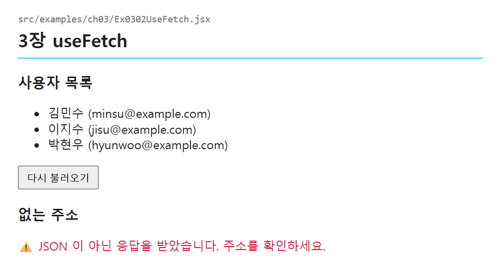

3장. 커스텀 훅
학습 목표
- 커스텀 훅이 무엇이고 언제 만드는지 안다.
useInput,useLocalStorage,useFetch를 만들고 쓴다.- 지난 요청의 응답이 늦게 와서 화면이 꼬이는 문제를 정리 함수로 막는다.
useCallback,useMemo,memo가 무엇인지 맛본다.
3-1. 커스텀 훅이란?
기초 게시판의 PostList 와 PostDetail 을 나란히 놓으면 거의 같은 코드가 있다. useState 세 개, useEffect, fetch, try / catch / finally… 이렇게 Hook 을 쓰는 코드 묶음을 함수로 빼낸 것이 커스텀 훅이다.
- 이름은 반드시
use로 시작한다. (React 가 Hook 규칙을 검사하는 기준) - 안에서
useState,useEffect등 다른 Hook 을 쓸 수 있다. - 훅은 코드를 나눠 쓰는 것이지 값을 나눠 쓰는 것이 아니다. 두 컴포넌트가 같은 훅을 부르면 state 는 각자 따로 생긴다. (값을 나눠 쓰려면 Context - 5장)
3-2. useInput - 입력 칸 한 줄로
// useInput.js - 커스텀 훅 ① : 입력 칸 하나를 다루는 코드를 묶은 것
//
// 이 파일이 보여 주는 것
// - 커스텀 훅 = 이름이 use 로 시작하고, 안에서 다른 Hook(useState 등)을 쓰는 "평범한 함수"
// - 컴포넌트마다 반복되던 "useState + onChange" 를 한 줄로 줄인다.
// - 훅을 쓰는 컴포넌트마다 state 가 따로 생긴다 (값을 나눠 갖는 것이 아니라 "코드" 를 나눠 쓰는 것)
//
// 사용: const title = useInput("");
// <input {...title.bind} /> ← value 와 onChange 를 한 번에 펼쳐 넣는다
// title.value / title.reset()
import { useState } from "react";
export function useInput(initialValue = "") {
const [value, setValue] = useState(initialValue);
const onChange = (e) => setValue(e.target.value);
const reset = () => setValue(initialValue);
return {
value,
setValue,
reset,
bind: { value, onChange }, // <input {...bind} /> 로 쓰기 좋게 묶음
};
}
<input {...title.bind} /> 는 <input value={title.value} onChange={...} /> 와 같다. 객체의 전개 연산자를 JSX 속성에 쓴 것이다.
3-3. useLocalStorage - 새로 고침해도 남는 state
localStorage 는 브라우저에 글자를 저장하는 작은 저장소다. 탭을 닫고 다시 열어도 남는다. 9장에서 로그인 토큰을 여기에 보관한다.
// useLocalStorage.js - 커스텀 훅 ② : 새로 고침해도 남는 state
//
// 이 파일이 보여 주는 것
// - useState 와 똑같이 [값, 바꾸는 함수] 를 돌려주지만, 값이 바뀔 때마다 브라우저의
// localStorage 에도 저장한다. 처음에는 localStorage 에 저장된 값이 있으면 그것으로 시작한다.
// - localStorage 는 문자열만 저장하므로 JSON.stringify / JSON.parse 로 바꿔 넣고 꺼낸다.
// - useState(() => ...) : 함수를 넘기면 "처음 한 번만" 실행된다 (매번 localStorage 를 읽지 않게)
// 심화 9장에서 로그인 토큰을 이렇게 localStorage 에 보관한다.
import { useEffect, useState } from "react";
export function useLocalStorage(key, initialValue) {
const [value, setValue] = useState(() => {
const saved = localStorage.getItem(key); // 없으면 null
return saved !== null ? JSON.parse(saved) : initialValue;
});
// 값이 바뀔 때마다 저장
useEffect(() => {
localStorage.setItem(key, JSON.stringify(value));
}, [key, value]);
return [value, setValue];
}
두 훅을 함께 써 보자.
// Ex0301CustomHooks.jsx - useInput 과 useLocalStorage 를 써 보기
//
// 이 예제가 보여 주는 것
// - useInput 덕분에 입력 칸마다 useState + onChange 를 따로 쓰지 않아도 된다.
// - useLocalStorage 로 만든 메모 목록은 새로 고침(F5)해도 남아 있다.
// - 훅을 두 번 부르면(title, author) state 도 두 개 따로 생긴다.
import { useInput } from "../../hooks/useInput";
import { useLocalStorage } from "../../hooks/useLocalStorage";
function Ex0301CustomHooks() {
const title = useInput("");
const author = useInput("익명");
const [memos, setMemos] = useLocalStorage("memos", []); // localStorage 의 "memos" 칸에 저장
const handleSubmit = (e) => {
e.preventDefault();
if (!title.value.trim()) return;
setMemos([...memos, { id: Date.now(), title: title.value, author: author.value }]);
title.reset(); // 제목 칸만 비우고 작성자는 남긴다
};
return (
<div>
<form onSubmit={handleSubmit}>
<input {...title.bind} placeholder="메모" /> {/* value, onChange 가 한 번에 들어간다 */}
<input {...author.bind} placeholder="작성자" style={{ width: 80 }} />
<button type="submit">저장</button>
<button type="button" onClick={() => setMemos([])}>
모두 지우기
</button>
</form>
<ul>
{memos.map((m) => (
<li key={m.id}>
{m.title} <small>- {m.author}</small>
</li>
))}
</ul>
<p>
<small>F5 로 새로 고쳐도 메모가 남는다. (개발자 도구 → Application → Local Storage 에서 확인)</small>
</p>
</div>
);
}
export default Ex0301CustomHooks;

F12 → Application 탭 → 왼쪽 Local storage → http://localhost:5173 을 누르면 memos 칸에 JSON 글자로 저장된 것이 보인다.
3-4. useFetch - 불러오기 세트를 한 줄로
// useFetch.js - 커스텀 훅 ③ : "불러오기 + 로딩 + 오류" 세트를 한 줄로
//
// 이 파일이 보여 주는 것
// - 기초 과정 게시판에서 목록·읽기 화면마다 반복했던 코드
// (useState 3개 + useEffect + fetch + try/catch)
// 를 훅 하나로 묶는다 → 컴포넌트에는 const { data, loading, error } = useFetch(url) 한 줄
// - url 이 바뀌면 다시 불러온다 (의존성 배열 [url])
// - 정리 함수에서 ignore = true 로 표시해, 응답이 늦게 도착해도 "이미 지나간 요청" 의
// 결과로 state 를 덮어쓰지 않게 한다. (빠르게 다른 글을 눌렀을 때 생기는 꼬임 방지)
// - reload() 를 부르면 같은 주소를 다시 불러온다.
import { useCallback, useEffect, useState } from "react";
export function useFetch(url) {
const [data, setData] = useState(null);
const [loading, setLoading] = useState(true);
const [error, setError] = useState(null);
const [version, setVersion] = useState(0); // reload 용: 숫자를 바꾸면 effect 가 다시 실행된다
useEffect(() => {
if (!url) return; // url 이 아직 없으면 아무것도 안 함
let ignore = false; // 이 요청이 아직 "유효한지" 표시
async function load() {
setLoading(true);
setError(null);
try {
const res = await fetch(url);
if (!res.ok) throw new Error(`요청 실패 (${res.status})`);
// 없는 파일이면 Vite 개발 서버가 index.html(200)을 주므로 JSON 인지도 확인한다 (기초 8장)
if (!res.headers.get("content-type")?.includes("application/json")) {
throw new Error("JSON 이 아닌 응답을 받았습니다. 주소를 확인하세요.");
}
const json = await res.json();
if (!ignore) setData(json); // 지나간 요청이면 무시
} catch (err) {
if (!ignore) setError(err.message);
} finally {
if (!ignore) setLoading(false);
}
}
load();
return () => {
ignore = true; // url 이 바뀌거나 화면에서 사라지면 이전 요청은 무시
};
}, [url, version]);
// useCallback: 다시 그려져도 같은 함수를 유지 (자식에게 넘길 때 불필요한 다시 그리기 방지)
const reload = useCallback(() => setVersion((v) => v + 1), []);
return { data, loading, error, reload };
}
// Ex0302UseFetch.jsx - useFetch 훅으로 데이터 불러오기
//
// 이 예제가 보여 주는 것
// - 기초 과정의 Ex0802Fetch 와 같은 일을 하는데, 컴포넌트 코드는 훨씬 짧다.
// - 같은 훅을 다른 주소로 두 번 써도 서로 섞이지 않는다.
// - reload() 로 다시 불러오기
import { useFetch } from "../../hooks/useFetch";
function UserList() {
const { data: users, loading, error, reload } = useFetch("/data/users.json");
// data: users → 꺼내면서 이름을 users 로 바꾼다 (구조 분해의 이름 바꾸기)
if (loading) return <p>⏳ 불러오는 중...</p>;
if (error) return <p style={{ color: "crimson" }}>⚠️ {error}</p>;
return (
<div>
<ul>
{users.map((u) => (
<li key={u.id}>
{u.name} ({u.email})
</li>
))}
</ul>
<button onClick={reload}>다시 불러오기</button>
</div>
);
}
function Broken() {
const { error, loading } = useFetch("/data/없는파일.json");
if (loading) return <p>⏳ 불러오는 중...</p>;
return <p style={{ color: "crimson" }}>⚠️ {error}</p>;
}
function Ex0302UseFetch() {
return (
<div>
<h3>사용자 목록</h3>
<UserList />
<h3>없는 주소</h3>
<Broken />
</div>
);
}
export default Ex0302UseFetch;

없는 파일인데 404 가 아니라 "JSON 이 아닌 응답" 이 보이는 이유는 기초 교안 8-3 에서 본 것처럼 Vite 개발 서버가 index.html 을 돌려주기 때문이다. useFetch 에도 같은 검사를 넣어 두었다.
ignore 변수는 왜 필요할까? 1번 글을 눌렀다가 바로 2번 글을 눌렀다고 하자. 1번 요청이 느려서 2번보다 늦게 도착하면, 화면에는 2번 글 주소인데 1번 글 내용이 보이는 꼬임이 생긴다. url 이 바뀌면 정리 함수가 먼저 실행되어 이전 요청의 ignore 를 true 로 만들고, 늦게 온 1번 응답은 무시된다. (StrictMode 가 effect 를 두 번 실행해도 첫 번째 결과가 무시되는 것도 이 덕분이다.)
3-5. 맛보기: useCallback, useMemo, memo
다시 그리기를 줄이는 최적화 도구다. 느리다는 것이 확인된 뒤에 쓰는 것이 원칙이고, 이 과정에서는 이름과 용도만 알아 둔다.
| 도구 | 하는 일 | 예 |
|---|---|---|
useCallback(함수, [의존성]) |
다시 그려도 같은 함수를 유지 | useFetch 의 reload |
useMemo(() => 계산, [의존성]) |
의존성이 같으면 계산 결과를 재사용 | 수천 개 목록의 정렬·필터 |
memo(컴포넌트) |
props 가 같으면 자식 다시 그리기를 건너뜀 | 무거운 목록 항목 |
// 예: products 나 keyword 가 바뀔 때만 다시 거른다
const filtered = useMemo(
() => products.filter((p) => p.name.includes(keyword)),
[products, keyword],
);
정리
- 커스텀 훅 =
use로 시작하고 Hook 을 쓰는 함수. 반복되는 Hook 코드를 묶는다. - 같은 훅을 여러 곳에서 써도 state 는 따로다.
useLocalStorage:useState(() => 처음 한 번 읽기)+useEffect로 저장.useFetch: 정리 함수의ignore로 늦게 온 지난 응답을 무시한다.- 최적화(
useCallback,useMemo,memo)는 필요할 때만.
확인 문제
- 커스텀 훅의 이름이
use로 시작해야 하는 이유를 쓰시오. useToggle(처음값)훅을 만드시오.[on, toggle]을 돌려주고,toggle()을 부르면 true/false 가 뒤집힌다.- 두 컴포넌트 A, B 가 각각
useLocalStorage("count", 0)을 쓴다. A 에서 값을 바꾸면 B 의 화면도 바로 바뀌는가? 이유를 쓰시오. - useFetch 에서
return () => { ignore = true; }를 지우면 어떤 상황에서 문제가 생기는지 설명하시오.